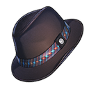
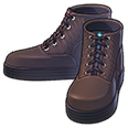
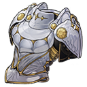
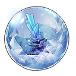
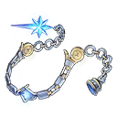

추천 광추
언제나 불공평한 운명
방어력·치명타 피해·추가 공격 취약
효과 자세히
방어력 +40%. 실드 부여 → 치명타 피해 +40%(2턴), 추가 공격 명중 → 기본 확률 100%로 적 피해 취약 +10%(2턴).
언제나 여정이 평탄하기를
방어력·실드 보강
효과 자세히
제공하는 실드량이 24% 증가. 아군이 실드를 보유할 시 가하는 피해가 20% 증가
승리의 순간
방어력과 피격 확률
효과 자세히
방어력이 24% 증가하고, 효과 명중이 24% 증가하며, 자신이 피격될 확률이 증가. 장착한 캐릭터는 피격 후 자신의 턴이 끝날 때까지 방어력이 추가로 24% 증가
여생의 첫날
방어력과 아군의 모든 속성 피해 저항
효과 자세히
방어력이 24% 증가. 전투 진입 후 모든 아군의 모든 속성 저항이 12% 증가. 같은 유형의 스킬 효과는 중복 적용되지 않는다
우주 시장 동향
피격 시 연소 디버프
효과 자세히
방어력이 32% 증가. 피격된 후 120%의 기본 확률로 적이 연소 상태에 빠진다. 턴마다 장착한 캐릭터 방어력 80%만큼의 지속 피해를 준다. 지속 2턴
추천 유물
별빛에 숨은 은둔자 4 · 부러진 용골 2
- 머리

주옵션HP부옵션방어력% · 속도 · 치명타 피해 · 치명타 확률 · 효과 저항 - 손
 주옵션공격력부옵션방어력% · 속도 · 치명타 피해 · 치명타 확률 · 효과 저항
주옵션공격력부옵션방어력% · 속도 · 치명타 피해 · 치명타 확률 · 효과 저항 - 몸통
 주옵션방어력% / 치명타 피해부옵션방어력% (주옵션 제외) · 속도 · 치명타 피해 (주옵션 제외) · 치명타 확률 · 효과 저항
주옵션방어력% / 치명타 피해부옵션방어력% (주옵션 제외) · 속도 · 치명타 피해 (주옵션 제외) · 치명타 확률 · 효과 저항 - 다리

주옵션속도 / 방어력%부옵션방어력% (주옵션 제외) · 속도 (주옵션 제외) · 치명타 피해 · 치명타 확률 · 효과 저항 - 구체
 주옵션방어력%부옵션속도 · 치명타 피해 · 치명타 확률 · 효과 저항
주옵션방어력%부옵션속도 · 치명타 피해 · 치명타 확률 · 효과 저항 - 매듭
 주옵션방어력%부옵션속도 · 치명타 피해 · 치명타 확률 · 효과 저항
주옵션방어력%부옵션속도 · 치명타 피해 · 치명타 확률 · 효과 저항
이 조합을 추천하는 이유
은둔자 4세트 → 제공 실드량 +22%, 실드 대상 치명타 피해 +15%. 용골은 효과 저항 30%에서 팀 치명타 피해 지원.
정토 교황의 팔라딘 4 · 축성가의 벨로보그 2
- 머리
 주옵션HP부옵션방어력% · 속도 · 치명타 피해 · 치명타 확률 · 효과 저항
주옵션HP부옵션방어력% · 속도 · 치명타 피해 · 치명타 확률 · 효과 저항 - 손
 주옵션공격력부옵션방어력% · 속도 · 치명타 피해 · 치명타 확률 · 효과 저항
주옵션공격력부옵션방어력% · 속도 · 치명타 피해 · 치명타 확률 · 효과 저항 - 몸통

주옵션방어력%부옵션속도 · 치명타 피해 · 치명타 확률 · 효과 저항 - 다리
 주옵션속도 / 방어력%부옵션방어력% (주옵션 제외) · 속도 (주옵션 제외) · 치명타 피해 · 치명타 확률 · 효과 저항
주옵션속도 / 방어력%부옵션방어력% (주옵션 제외) · 속도 (주옵션 제외) · 치명타 피해 · 치명타 확률 · 효과 저항 - 구체

주옵션방어력%부옵션속도 · 치명타 피해 · 치명타 확률 · 효과 저항 - 매듭

주옵션방어력%부옵션속도 · 치명타 피해 · 치명타 확률 · 효과 저항
이 조합을 추천하는 이유
정토 교황 → 방어력 +15%, 제공 실드량 +20%. 벨로보그 → 방어력 +15%, 효과 명중 50% 이상이면 추가 +15%.
사수에 잠수한 선구자 4 · 바다에 잠긴 루샤카 2
- 머리
 주옵션HP부옵션방어력% · 속도 · 치명타 확률 · 치명타 피해
주옵션HP부옵션방어력% · 속도 · 치명타 확률 · 치명타 피해 - 손
 주옵션공격력부옵션방어력% · 속도 · 치명타 확률 · 치명타 피해
주옵션공격력부옵션방어력% · 속도 · 치명타 확률 · 치명타 피해 - 몸통
 주옵션방어력% / 치명타 피해부옵션방어력% (주옵션 제외) · 속도 · 치명타 확률 · 치명타 피해 (주옵션 제외)
주옵션방어력% / 치명타 피해부옵션방어력% (주옵션 제외) · 속도 · 치명타 확률 · 치명타 피해 (주옵션 제외) - 다리
 주옵션속도 / 방어력%부옵션방어력% (주옵션 제외) · 속도 (주옵션 제외) · 치명타 확률 · 치명타 피해
주옵션속도 / 방어력%부옵션방어력% (주옵션 제외) · 속도 (주옵션 제외) · 치명타 확률 · 치명타 피해 - 구체
 주옵션방어력%부옵션속도 · 치명타 확률 · 치명타 피해
주옵션방어력%부옵션속도 · 치명타 확률 · 치명타 피해 - 매듭
 주옵션방어력%부옵션속도 · 치명타 확률 · 치명타 피해
주옵션방어력%부옵션속도 · 치명타 확률 · 치명타 피해
이 조합을 추천하는 이유
선구자 4세트와 루샤카를 사용한 4.7 종결안입니다. 치명타 부옵을 함께 확보합니다.
이 정도면 잘 키웠다
선택한 세팅 기준 · —는 확인된 수치 없음
방어력과 제때 실드를 갱신할 속도를 확보합니다.
| 스탯 | 추천 스탯 | 준종결 | 종결 |
|---|---|---|---|
| 방어력 | 4500 | — | — |
| 속도 | 133.4+ | — | — |
별도 공개 가이드의 방어력 중심 권장·종결입니다.
| 스탯 | 추천 스탯 | 준종결 | 종결 |
|---|---|---|---|
| 방어력 | 3500 | — | 4000+ |
| 속도 | 125 / 134 | — | 134 |
실드와 추가 공격의 치명타를 함께 챙기는 4.7 종결안입니다.
| 스탯 | 추천 스탯 | 준종결 | 종결 |
|---|---|---|---|
| 방어력 | — | — | 4000 |
| 속도 | — | — | 134 |
| 치명타 확률 | — | — | 52% |
| 치명타 피해 | — | — | 150% |
세팅 기준·출처
4.7 종결 시트 기준입니다. 장신구로 루샤카 또는 도람을 제시합니다. 확인한 자료에 독립적인 준종결 수치가 없습니다.
성혼과 추천 돌파
성혼 1은 필살기로 전원 실드를 갱신합니다. 성혼 2는 일반 공격에 저항 감소를 붙여 디버프 파티 운용을 보조합니다.
1실드 대상 치명타 피해 +20%·필살기로 실드추천
견고한 칩을 보유한 아군의 치명타 피해가 20% 증가. 필살기 발동 후 모든 아군에게 실드 견고한 칩을 제공한다. 실드량은 전투 스킬이 제공하는 실드량의 100%다. 지속 3턴
2일반 공격 → 모든 속성 저항 −12%(3턴)추천
일반 공격 발동 시 목표의 모든 속성 저항이 12% 감소. 지속 3턴
3필살기 +2 · 일반 공격 +1
필살기 +2 · 일반 공격 +1
4추가 공격 전 방어력 +40%·공격 +3단
특성의 추가 공격 발동 시, 우선 어벤츄린의 방어력이 40% 증가, 지속 2턴. 또한, 특성 추가 공격의 공격 단수가 추가로 3단 증가
5전투 스킬 +2 · 특성 +2
전투 스킬 +2 · 특성 +2
6실드 동료당 피해 +50%, 최대 +150%
실드를 보유한 동료 1명마다 어벤츄린이 가하는 피해가 50% 증가하며, 최대 150%를 초과하지 않는다
추천 파티


기본 운영과 행적
기본 운영
견고한 칩을 유지하고 안전하면 일반 공격으로 포인트를 모으세요. 주요 적에게 필살기를 써 치명타 피해 취약을 남깁니다.
행적 우선순위
전투 스킬 > 특성 > 필살기 > 일반 공격. 방어력 기반 치명타 확률과 추가 공격 후 실드 행적을 열어 주세요.
아하 속도 계산기 →